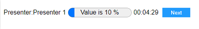
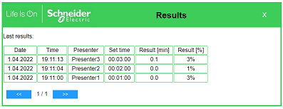

How to use timekeeper 2.0 applications
Timekeeper is apllication for time management to keep time of each presentations under control. Many pesenters lost time control what is a problem during conference when there is few presentes waiting for his time with delay and total time of conference is overtime.
If you start application first time, set name of each presenters and preresentation time in settnigs menu. Use hamburger icon on right side to oen menu. seting is second item.
When you are ready for presentation and speaker start presentation click icon play of current speaker. In case of presentation inline with define order you can click buton next on progress bar when first presentes finish hie seak and second speake start.
If presentation order is not as it was set, instead click next you can stop each presenters and start next one

Afer all presenters finish they presentations clicking on hamburger menu and afer on Result item you can go to result page when you can check results on each presentes comparing if they meet target of time their presentations. Results ar show in procent time spend and minutes.

if you don't need to use progress bar you can toglle it clicking button Show progress bar